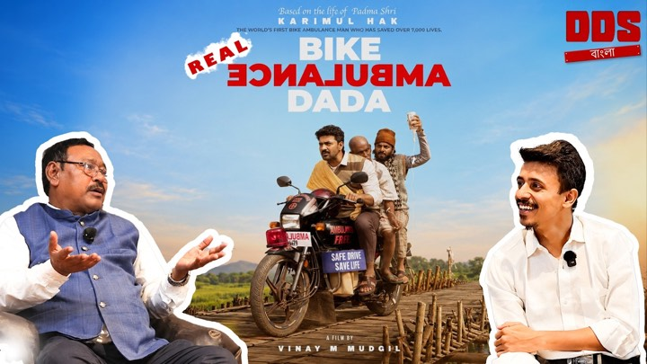
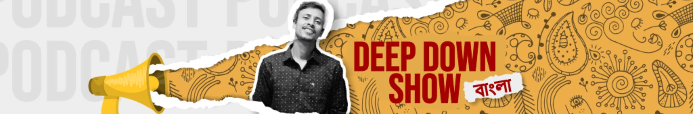

বিশ্বের প্রথম বাংলা টক-শো পডকাস্ট · Kolkata · Since 2021
Long conversations for the Bengali mind. Host Barun sits down with founders, doctors, scholars, activists and the occasional Padma Shri, and asks the next question instead of the polite one.
- Format
- Long-form video podcast
- Language
- বাংলা · Bangla
- Runtime
- Usually over an hour

New · DDS 25 1:41:06সব পর্ব · All episodes
Twenty-five conversations, none of them short.
Every episode of the show since 2021, in one place. Pick a theme, clear an evening.
থিম · Running threads
Four questions the show keeps coming back to.
-
11 episodes
বাঙালি ব্যবসা করছেWhy Bengalis don't do business, and the ones who do
From a tea shop in Durgapur and a backpackers' camp on Mousuni Island to Chowman, India's first umbrella manufacturer and a century-old nursery. Founders on how the money actually came.
Ep 4 – 21 -
4 episodes
অধিকার, শরীর, সংসারRights, the body, and the household
A urologist on everything men won't ask, a men's rights activist on marriage law, a martial artist on safety, and the Bike Ambulance Dada on what a life is for.
Ep 22 – 25 -
3 episodes
রামায়ণ, আবার পড়াRamayan, re-read
Was Ravan the hero? Which version should you believe? Dr. Janardan Ghosh and Akash of Ravanayan on the gaps Valmiki left open, and on being spiritual without being religious.
Ep 2 · 10 · 13 -
5 episodes
সিনেমা, মঞ্চ, মন্ত্রCinema, stage and sleight of hand
Why Pushpa 2 and Khadaan broke out, how Kalkokkho won awards on a shoestring, the science behind mentalism, and how to become a poet.
Ep 1 · 3 · 14 · 15 · 20
শর্টস · Under a minute
Sixty seconds, one idea.
ডিডিএস ক্লিপস · Second channel
Short on time? DDS Clips বাংলা.
Every episode gets cut into the handful of minutes that stand on their own. Two to twelve minutes each, on a channel of their own.
Open DDS Clipsঅতিথি · The guests
People who say the quiet part.
গভীরে
যাও।
Go deep. That's the whole brief.
আমাদের কথা · About the show
A talk show for the Bengali mind, made in Kolkata.
Deep Down Show started in April 2021 as the Startupians' answer to a simple gap: Bengal was full of interesting people and had no long-form podcast in its own language. Twenty-five episodes later it is still the same format. One guest, one host, and enough time for the real answer.
Host Barun runs the conversation the way a good adda runs: slowly, without a script, and towards the thing nobody planned to say. Episodes are on YouTube and Spotify, and the sharpest cuts live on the DDS Clips channel.
- StartupiansThe collective behind the show, building Bengali-language learning content on communication, sales and leadership.
- Diner49BHospitality partner. A café and dine-in in South Kolkata where some of the conversations happen.
- Two channelsFull episodes here on Deep Down Show, the sharpest cuts on DDS Clips বাংলা.

যেখানে খুশি শুনুন · Listen everywhere
Watch it, or just listen on the tram.
সহযোগিতা · Be on the show
Have a story worth going deep on?
Guests, brand partnerships, venue partners, cross-channel collaborations. One inbox, read by the people who make the show.